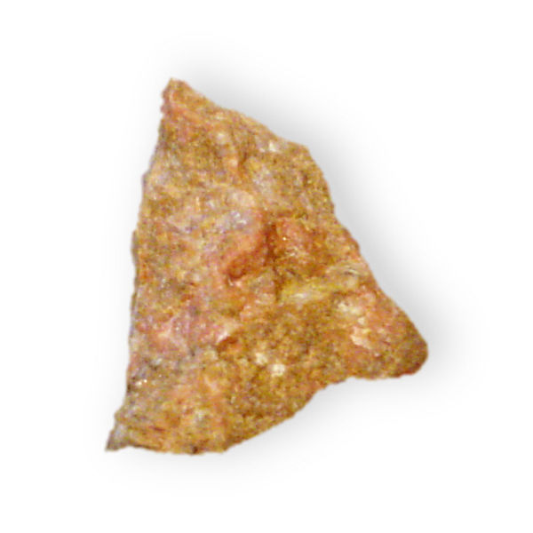
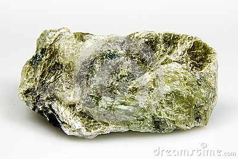
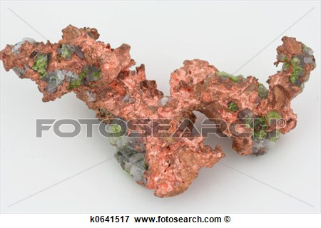
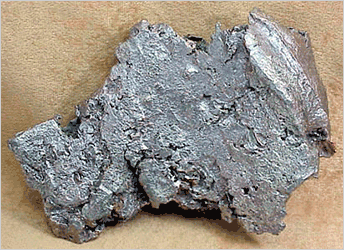
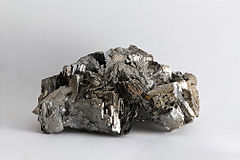
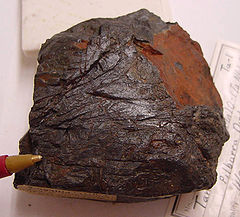
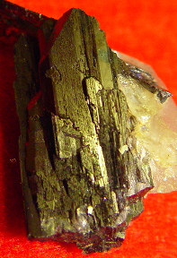
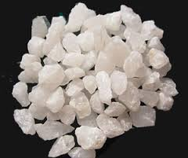
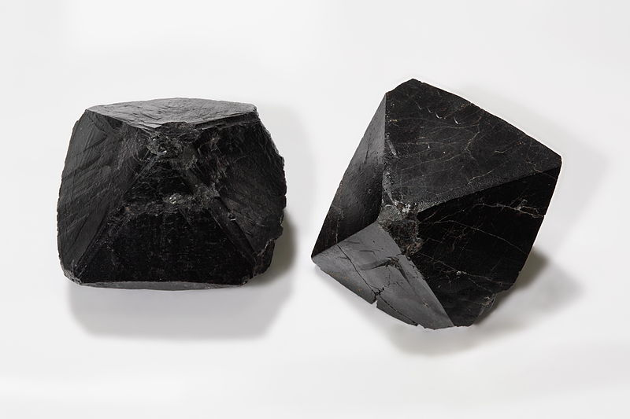
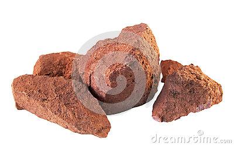

Housing and speakers
Bastnaesite is a rare earth mineral used to produce magnets in speakers, microphones, and vibration motors.
Battery
Spodumene and surface brines are the sources of lithium used in lithium-ion batteries.
Electronics
Copper is the principal conductor of electricity and heat in electronics.
Silver-based inks on composite boards create electrical pathways.

Silicon is produced from quartz and is the basis of most integrated circuits.
Arsenopyrite is an ore of arsenic, which is used in radio frequency and power amplifiers.
Tantalite is the primary ore of tantalum. Tantalum capasitors regulate voltage and improve audio quality in cell phones.
Wolframite is an ore of tungsten, which acts as a heat sink and provides the mass for cell phone vibration
LCD and Digitizer
Quartz Sand is the primary source of silica, which is chemically treated to make durable glass screens.
Cassiterite is a primary ore of tin. Indium-tin-oxide is the transparent conductive cating used in touch screen displays. Tin is also used in circuit board solder points.
Bauxite is the primary ore of aluminium and gallium, which are used for scratch-resistant screens and LED backlightning.
Bastnaesite is one of the rare earth minerals used to produce phosphors in LED phone displays.